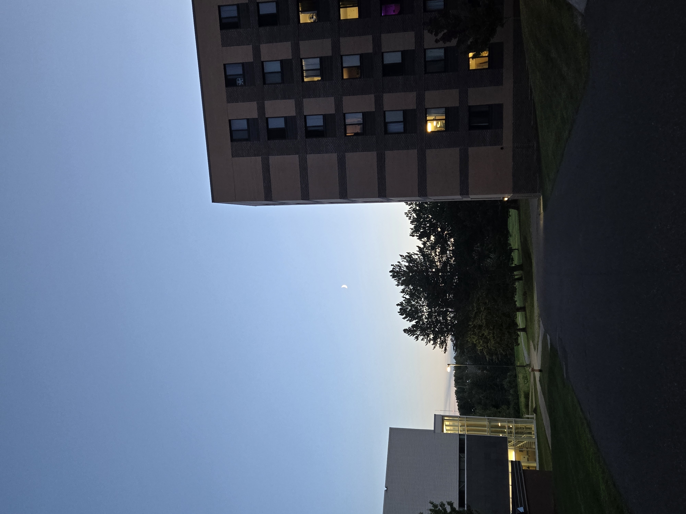
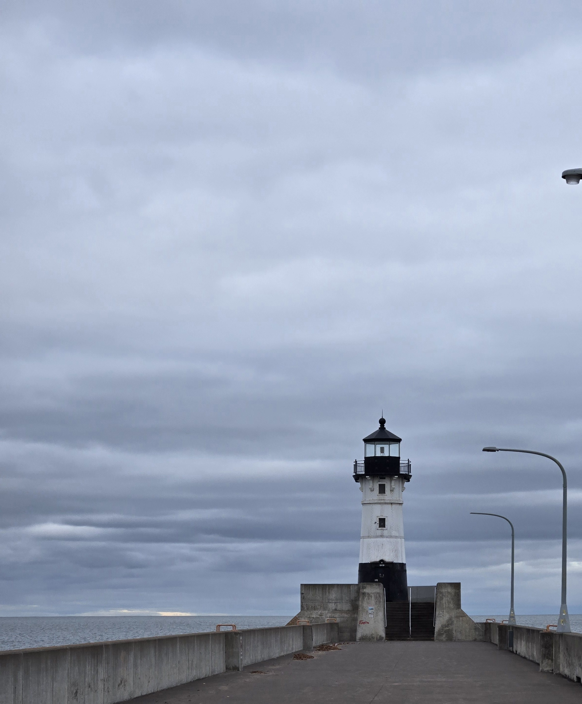
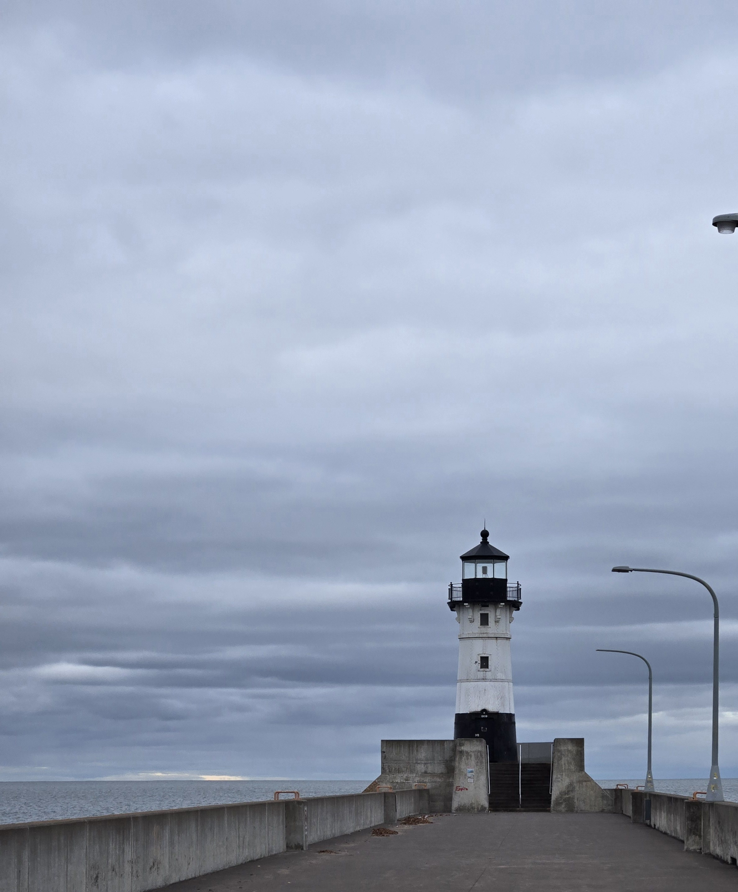

Discovering UMD
The University of Minnesota Duluth, also known as UMD, is a medium-sized university located in Duluth, MN. I chose UMD because it is a good school for accounting. It is also well-connected, progressive, and is in a nice location. I enjoy the city of Duluth and the proximity to Lake Superior and UMD is at the heart of it all.
Created By: Sadie Johnson, Samantha Nelson, and Hannah Conner
My Experiences at UMD
I currently live on-campus at UMD and have had a great time making friends with the people on my floor and customizing my dorm. I am in University Honors and have had a blast doing activities within the honors community and connecting with the greater Duluth community through volunteering or visiting different attractions and businesses. Some of the places around campus that I have explored and enjoyed include the Bagley nature area, the Tweed Museum of Art, and the Malosky stadium.
The Perks of Duluth
The city of Duluth is a great area and is known for having good public transportation which is particularly helpful as a college student without a car in the city. Duluth is also home to a good variety of different stores and restaurants as well as beauties of nature. Duluth has a lot of the same comforts as my home, however, it is different enough to give me something new to explore. I really like the downtown area/Canal Park because of the businesses down there such as the Zeitgeist theater and Pizza Luce.
 
